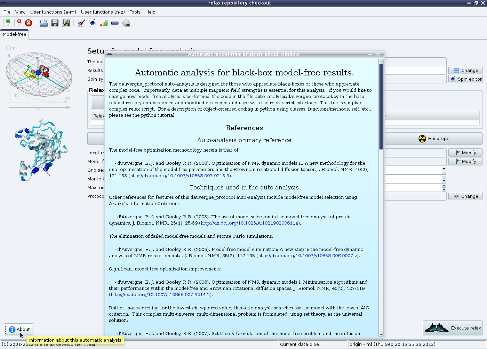

Next: d'Auvergne protocol GUI mode Up: The new protocol in Previous: d'Auvergne protocol GUI mode Contents Index
Once the analysis is initialised, the screen should look like:

|
The ``About'' button in the bottom left will bring up a window with the same description as given in the sample script:
|

|
At this point, back in the main relax window, the results directory where all of the output files and directories will be saved can be changed.